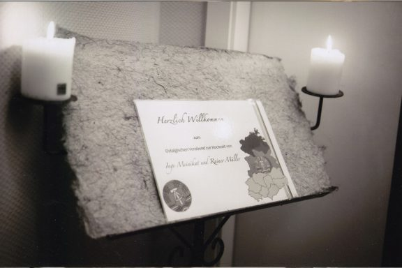
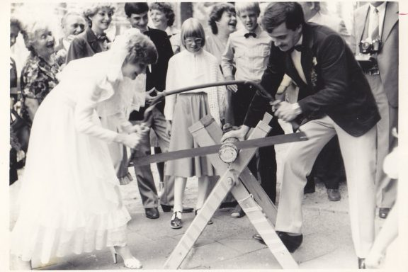
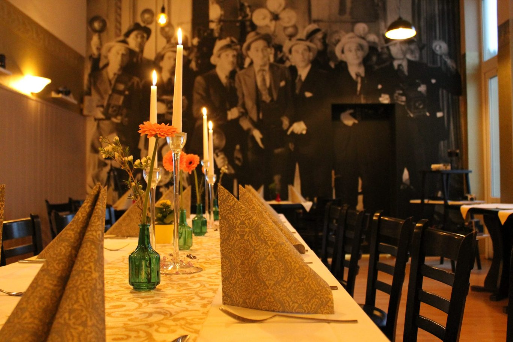
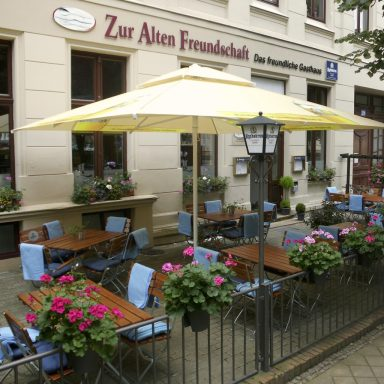
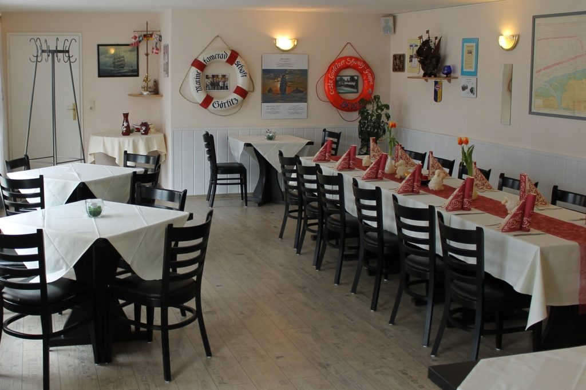
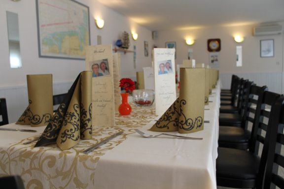

01
Gastraum
Der erste Blick geht mitten hinein: Holz, gedeckte Tische und diese klassische Gaststättenruhe, die nicht laut werden muss.
Bis 50Personen
räume mit geschichte
Gastraum, Fotografenzimmer und Maritimer Raum haben jeweils ihren eigenen Charakter. Sie eignen sich für ein Essen in kleiner Runde und können auch separat für Veranstaltungen gebucht werden.
ankommen
Ob ein ruhiges Abendessen, eine Familienfeier oder ein geselliger Vereinsabend: Unsere Gasträume bieten den passenden Rahmen und lassen sich gut mit Kegelbahn oder Catering verbinden.

unsere räume

Der erste Blick geht mitten hinein: Holz, gedeckte Tische und diese klassische Gaststättenruhe, die nicht laut werden muss.
Das Fotografenzimmer wirkt wie ein eigener kleiner Salon, gut für Geburtstage, Familienrunden und lange Gespräche.




Zum Schluss wieder nah dran: ein ruhiger Raum für Vereine, Versammlungen und Feiern bis etwa 28 Personen.
impressionen
kombinieren
Restaurantbesuch, Feier und Kegelabend können gemeinsam angefragt werden. In der lokalen Version wird das Formular nicht versendet.